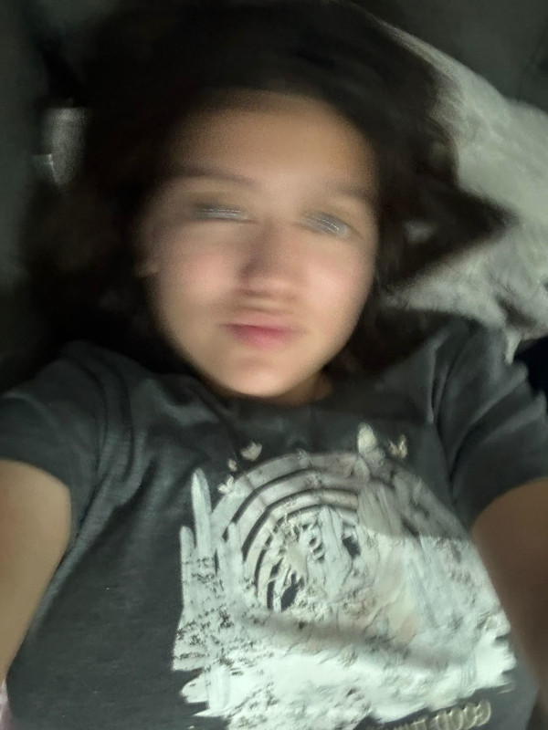

Mi nombre es Blanca, tengo 23 años y estoy en la licenciatura de arte y comunicación digitales, en esta carrera he aprendido a desenvolverme en el área digital y comprendido de mejor manera cómo poder expresarme mediante esta, tratando de crear varias obras a lo largo de este tiempo. Unas de las diferentes áreas que hemos practicado en la carrera, además de la codificación, es la animación y la toma de fotografías las cuales han dejado una huella en mi, queriendo explorar más de esas áreas y abarcarlas a mi día a día, tratando de mejorar y agrandar mis conocimientos.